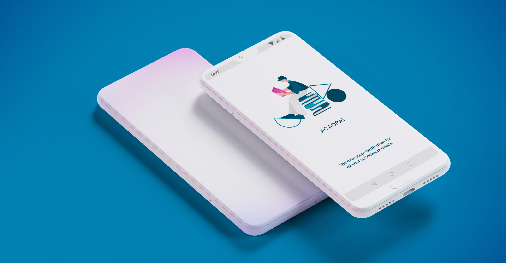
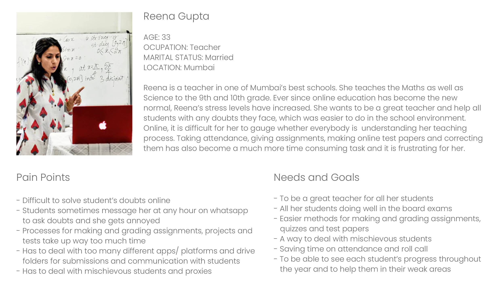

Acadpal: Learning Management System
48hr Challenge- Research & Design
Client
EdTech Start-up
Team
Individual
Role
UX Designer
Timeline
48 hrs
Tools
Paper & Pen, Adobe XD, Adobe Photoshop
Methods
Competitive Analysis, User Research, Information Architecture, Wireframing, High Fidelity Prototyping
Design Brief
- Design a high fidelity wireframe for an app based homework platform for high school students, allowing interactions between students and assignments.
- Design the UX from a student’s perspective who is going to submit homework.
- Students will be able attempt questions as well as navigate to other questions in an assignment.
- Design should be such that it allows students to use basic functionalities that are required to complete and submit a homework/assignment.
Problem Statement
Learning Management System platforms have been in use since quite some time now, but due to recent conditions and increase in the use and feasibility of technology, the use of such platforms has rapidly increased. Since the COVID 19 pandemic hit the world, and everyone moved to the WFH culture, students and teachers of Universities and schools have also been affected a lot. Online schooling has become the new norm, and there are not many services catering to these users to make the online learning experience easier. Over 90% of the teachers adopted WhatsApp as the primary mode of conducting assignments/homework. Problem with the existing products:
- Overall shoddy experience
- Creating assignments is extremely difficult
- Conducting handwritten assignments (through Google classroom/MS Teams) is a painful experience
- Not mobile first
Competitive Analysis
I began my research for this challenge by browsing through different Ed tech apps and services already in the market.
I analysed some of the features available on apps and websites catering to students and teacher, and
also went through the reviews of these apps to understand user’s pain points.
Through my research, I understood that the existing apps offer only few features and also lack a user friendly interface.
There is no comprehensive one stop application for students and teachers to incorporate online lectures,
video tutorials, time tables, homework, assignment submissions, grading, etc.
Existing Apps Survey
I went through the interfaces of Google Classroom and Canvas to understand how they’re structured and how they function. Reviews highlighting common pain points:


Why Zoom calls/ Skype/ Google Meets don’t fulfill the student and teacher needs?
- No easy solution for recording and storing the recorded lectures in one place to help students who missed lectures due to electricity issues, internet connectivity problems or any other personal problems
- These apps don't allow sending and submitting assignments in an efficient way and hence teachers have to rely on other apps
- The process of marking class attendance can be long and cumbersome due to internet connectivity issues
- Students lack classroom like environment, which is a must for primary school kids as they need more attention and discipline
Understanding Users
Interviewees
- University students
- School students
- Teachers
Goal of the interview
- To understand the major problems students and teachers are facing with online education.
- To know which apps/ platforms are they currently using for online education.
- Are students always able to attend lectures on time/ does internet connectivity affect attendance?
- Do students understand easily though online lectures? If not, how do they solve their doubts?
- How do teachers assign group projects, individual homework and assignments?
- What formats are these projects and assignments submitted in? Are they handwritten or are they pdf/ word documents?
- How do teachers grade these submissions and give corrections?
- How are online tests/ quizzes conducted?
- What features do they think can improve the online learning experience?
Student Interviews Insights
- Hard to understand difficult concepts of subjects like Physics and Maths through online lectures, and asking doubts is a hassle.
- Students who are hesitant to speak up and ask doubts in the presence of the entire class, used to prefer asking doubts to teachers personally in school. Now, they message their teachers on WhatsApp for any doubts and clarifications, but find it difficult to explain their doubts through text.
- Communication and file sharing for group projects is complicated. Different platforms like whatsapp, google drive, etc have to be used.
- Different formats for assignments/ homework submissions- handwritten work that needs to be uploaded in a jpeg format, pdfs, presentations
- All communication regarding lecture timings and assignment submissions takes place via Whatsapp and hence it’s difficult to keep track of all lectures and due dates for homework
Teacher Interviews Insights
- Notes, material explained in the lectures has to shared via google drive or WhatsApp, which is an added task
- Students message on WhatsApp for doubts and clarifications at odd hours which is inconvenient
- Student’s cameras are turned off so it becomes hard to gauge if they're paying attention and understanding the lecture
- Communication and file sharing for group projects is complicated. Different platforms like whatsapp, google drive, etc have to be used
- Corrections student’s assignments is time consuming since they have to write/solve the corrections and upload it as separate files for each student
- Marking class attendance is a very time consuming task, and it’s also hard to understand if there are any proxies
Personas
Based on these insights, I created user personas to give a narrative to these user interviews and reviews. This helped me in better understanding the type of users the app caters to, and to identify pain points easily.
Persona 1 (Click on image to enlarge & zoom)
Persona 2 (Click on image to enlarge & zoom)

User Flows
I created user flows to understand the various scenarios that students would face on the app. It helped
me to design the app navigation and organize information in an efficient way. The user flow demonstrates the step
by step actions taken by the users to accomplish different tasks while using the app.

Lo-fidelity Wireframes

Hi-Fidelity Prototypes
(Click on image to enlarge & zoom)

(Click on image to enlarge & zoom)


Prototype video
Next Steps
Since this was a 48hr challenge, I didn't get a chance to delve deeper and test the final designs on users. From here, I would like to test the interactions, making sure that they flow together whereby the interface boosts the experience of online education for both, students and teachers. In addition to this, expanding the functionality of this app to include mini-games and user collaboration along with the existing quizzes section, would be optimal to give a new perspective and effectively engage students in online education.